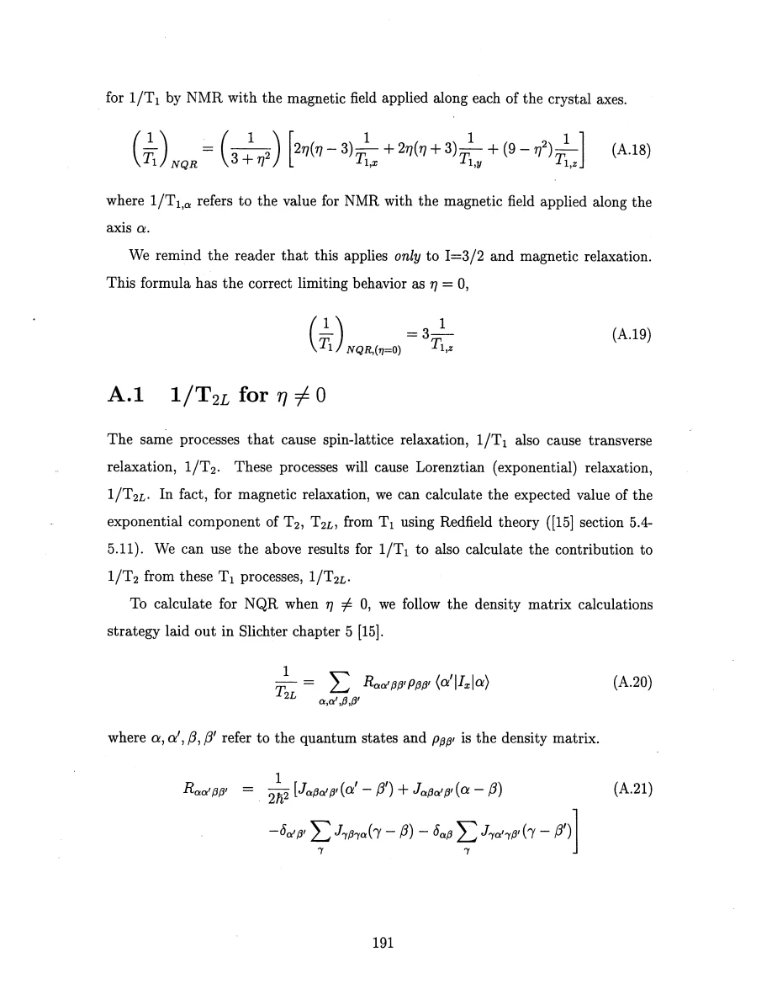
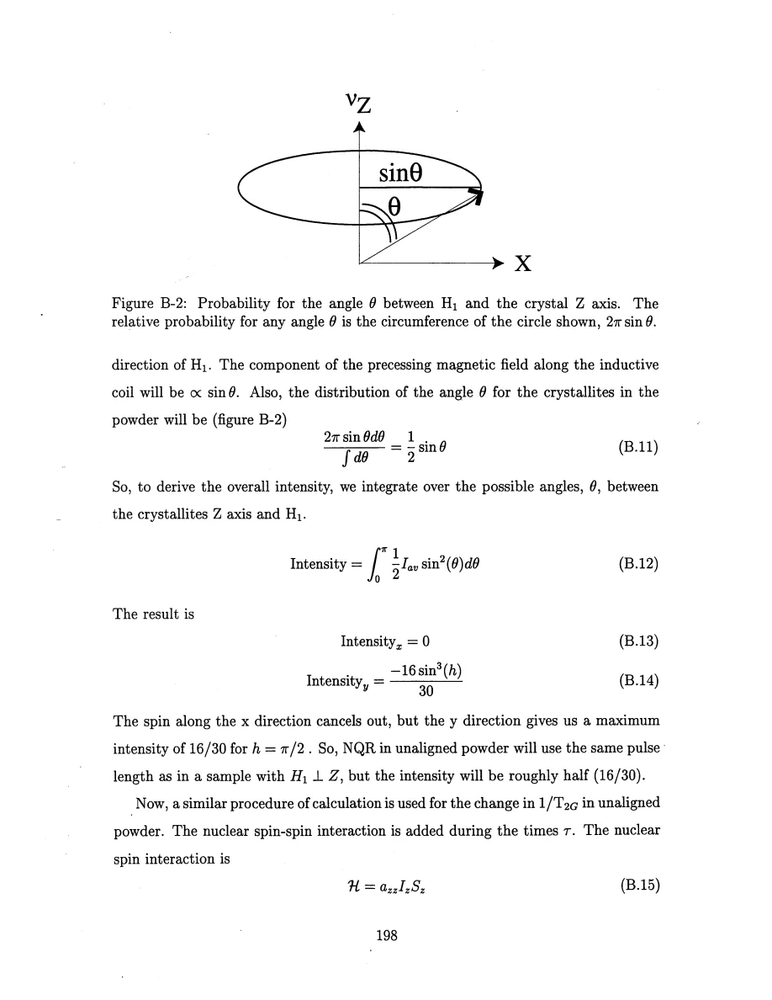
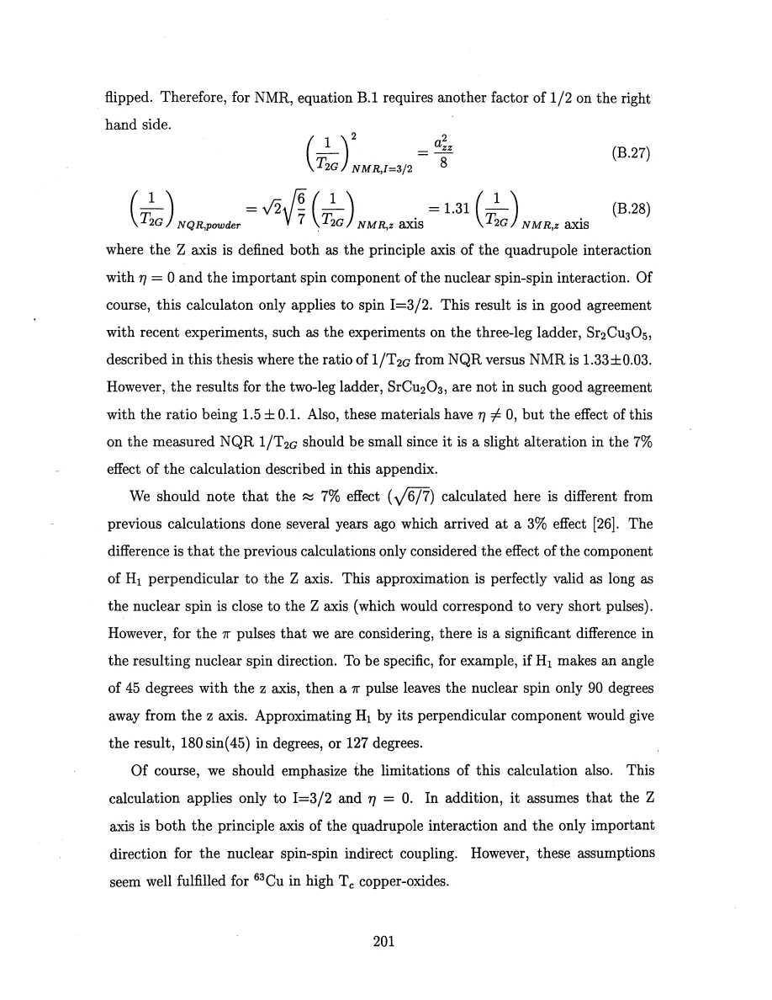
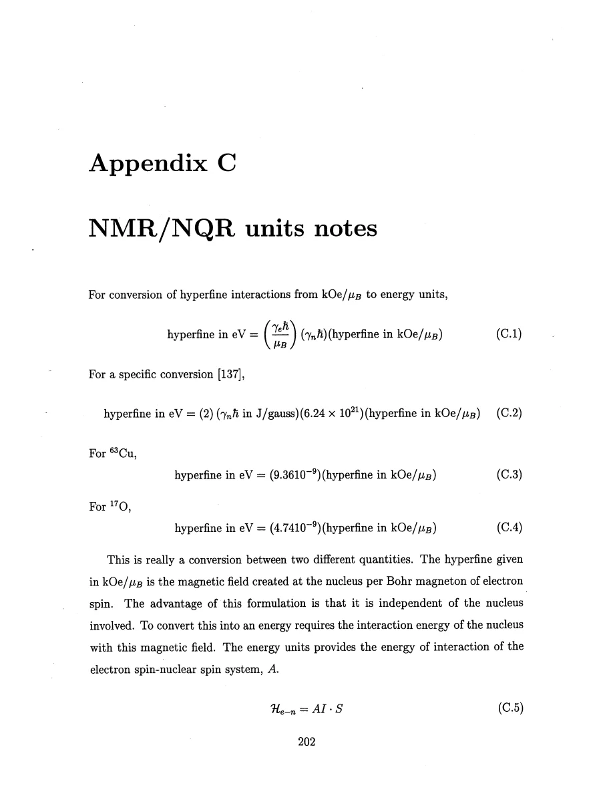

Thurber · supplied source 1999 · chapter unit
NQR anisotropy, powder echoes and unit conventions
Match recovery definitions, fluctuation directions, excited like spins and units; the corrections are part of the physics.
The question: What must be controlled before comparing NMR and NQR rates or converting hyperfine constants?
Before you start: the terms you need
- Spin-1/2 Heisenberg antiferromagnet: neighboring electron spins interact through J Sᵢ·Sⱼ with J>0.
- Hyperfine coupling: the electronic spin polarization produces a local magnetic field at a nucleus.
- Wave vector q: distinguishes uniform spin fluctuations near q=0 from staggered fluctuations near the antiferromagnetic vector Q.
- Correlation length ξ: a distance over which staggered electron-spin correlations remain appreciable.
- NMR/NQR: applied-field magnetic resonance versus resonance in the electric field gradient with no applied static field.
- Historical scope: these are experiments and interpretations reported in the supplied 1999 thesis, not a current review of quantum-spin transport.
See → explain → check
Follow the idea in 3 pictures.
Picture 1 / 3
The field or EFG defines different state axes
Look for: NMR sets a chosen magnetic direction; nonaxial NQR mixes principal-axis fluctuations.
Swipe across the picture to read every label, or enlarge it below.
- High-field NMR
- NQR
Teaching schematic. For I=3/2 magnetic relaxation. Appendix A’s physical recovery exponent and chapter 7’s rescaled nominal NQR T₁ differ by three in the axial limit.
Geometry must be converted before claiming a frequency effect.
Check the original: PDF p. 171 · PDF p. 172 · PDF p. 187 · PDF p. 188 · PDF p. 191 · PDF p. 193
Picture 2 / 3
Count only like spins flipped together
Look for: The RF pulse determines participating pairs, then powder orientation changes their echo weight.
Swipe across the picture to read every label, or enlarge it below.
- Excited like-spin pairs
- Powder orientation average
- Second moment
- NQR/NMR factor
Teaching schematic. Ideal I=3/2, η=0, dominant z coupling gives √2×√(6/7)≈1.31. Source SrCu₂O₃ does not match that factor as closely as Sr₂Cu₃O₅.
The Gaussian correction depends on pulse and tensor assumptions.
Check the original: PDF p. 194 · PDF p. 198 · PDF p. 200 · PDF p. 201
Picture 3 / 3
Choose the convention before inserting numbers
Look for: Compare electronic field coefficients, nuclear interaction energy and measured fractional shifts.
Swipe across the picture to read every label, or enlarge it below.
- Field coefficient
- Energy coefficient
- Knight shift
Teaching schematic. No mixed SI/cgs numerical calculator is implied. A quoted percent shift must be converted to a fraction.
The isotope and susceptibility units determine the conversion.
Check the original: PDF p. 202 · PDF p. 203 · PDF p. 204
Explain it back.
Try answering aloud before opening the explanation.
What is the first check if two nominal T₁ values differ by almost a factor of three?
Compare the fitted recovery exponent and nuclear-transition convention. For axial spin-3/2 NQR the physical single-exponential rate can be 3/T₁,z even when a nominal parameter is quoted as 1/T₁,z.
Is the factor 1.31 justified for any NQR powder?
No. It comes from spin-3/2, axial EFG, dominant z coupling and the specified excitation model. The thesis itself reports a less successful two-leg comparison.
Why cannot a 0.1% shift be inserted as 0.1 in the source K–χ conversion?
K is a fraction, so 0.1% is 0.001. Using 0.1 would increase the inferred coupling by 100.
Why does energy conversion depend on the nuclear isotope when field-per-μB can be isotope independent?
The electronic field coefficient describes the field itself. The interaction energy also includes the nuclear magnetic moment or gyromagnetic coupling.
Go deeper Follow the full argument
NQR mixes directions and recovery-rate definitions must match
Appendix A diagonalizes the spin-3/2 quadrupole Hamiltonian with a nonaxial electric field gradient. In NMR the static field sets the quantization direction; in NQR the quadrupole tensor and its asymmetry determine the nuclear states and magnetic transition matrix elements. The treatment assumes magnetic relaxation with a short correlation time relative to the nuclear period. The resulting single-exponential NQR recovery rate is a combination of the rates for hypothetical NMR fields along the principal axes. Its axial limit is three times the NMR T₁ parameter along the EFG axis. Chapter 7 uses a nominal NQR parameter rescaled by that factor of three for cross-material comparison, so the two printed T₁ labels cannot be mixed without inspecting their exponent. The η-dependent mixing explains why the edge-site NQR and NMR rates agree after anisotropy conversion despite different resonance frequencies. One NQR T₁ value alone is also insufficient to compute its exponential transverse rate T₂L: the underlying directional NMR rates or an anisotropy estimate are needed.
PDF p. 171 · PDF p. 172 · PDF p. 187 · PDF p. 188 · PDF p. 189 · PDF p. 190 · PDF p. 191 · PDF p. 192 · PDF p. 193
Powder averaging changes which nuclear pairs remain coupled in an echo
Appendix B treats unaligned powder through an effective two-state NQR model, random crystallite orientations and RF rotations. The detection weight and the distribution of EFG-axis angles must both be included; replacing every pulse by only a small perpendicular component is not adequate for a full π pulse. Gaussian indirect coupling remains in an echo when both partner spins are flipped. If only one is flipped, its accumulated phase from the coupling can refocus. For spin-3/2 NQR there are twice as many excited like-spin states as in a separated central-transition NMR experiment, supplying a factor √2 in the Gaussian rate. Random powder geometry supplies another √(6/7), giving a combined nominal factor around 1.31. This assumes η=0, dominant coupling along the EFG axis and the specified pulse model. The three-leg comparison gives about 1.33, but SrCu₂O₃ differs more substantially. That mismatch prevents treating 1.31 as a universal empirical correction for every powder measurement.
PDF p. 153 · PDF p. 173 · PDF p. 194 · PDF p. 195 · PDF p. 196 · PDF p. 197 · PDF p. 198 · PDF p. 199 · PDF p. 200 · PDF p. 201
A hyperfine field coefficient is not already an energy
Appendix C distinguishes hyperfine constants expressed as field per Bohr magneton from interaction energies multiplying I·S. A coefficient in kOe/μB characterizes the electronic field at the nucleus and can be quoted independently of which nuclear isotope probes it. Converting to an interaction energy requires the nuclear magnetic coupling, making the conversion isotope dependent. The source gives factors of 9.36×10⁻⁹ eV per kOe/μB for copper-63 and 4.74×10⁻⁹ for oxygen-17 in its spin convention. Knight-shift conversion also requires matching the molar cgs susceptibility and a dimensionless shift: percentages must first be divided by 100. Finally, χ quoted as states per exchange energy and per spin is not already cm³/mol. The electronic magnetic-moment factor, Avogadro factor and energy conversion must be restored. The guide retains proportional response equations where convenient rather than combine incompatible conventions into a falsely precise prefactor. When reusing a source formula, identify every unit and angular-versus-cyclic frequency definition before calculating.
Translate the mathematics Essential equations and their meaning
rNQR(η=0)=3/T₁,z
Symbols: rNQR: actual single-exponential recovery exponent in Appendix A; T₁,z: NMR magnetic parameter with H along EFG z.
I=3/2, magnetic fast-fluctuation limit. Chapter 7’s nominal NQR rate is rescaled by three; do not merge labels across those conventions.
R₂G,NQR,powder≈√(12/7) R₂G,NMR,z≈1.31 R₂G,NMR,z
Symbols: R₂G=1/T₂G; z: EFG principal and dominant indirect-coupling axis.
Spin-3/2, axial EFG and adequate excitation assumptions. The source notes the two-leg-ladder discrepancy rather than treating the factor as universal.
Aenergy,63Cu[eV]=9.36×10⁻⁹ Afield[kOe/μB]
Symbols: Aenergy: coefficient of I·S in the source convention; Afield: hyperfine field per electronic moment.
Isotope-specific copper-63 conversion. Oxygen-17 uses a different factor; this is not a general dimensional conversion between arbitrary definitions.
Afield[kOe/μB]=5.580 Kspin/χspin[cm³/mol]
Symbols: Kspin: dimensionless fractional shift; χspin: matching molar cgs spin susceptibility.
Source convention for K–χ analysis. Entering K as a percent would introduce a factor-100 error.
Read the evidence Guided original source pages

PDF p. 191

PDF p. 198

PDF p. 201

PDF p. 202
What the evidence supports—and where it stops
- Appendix A assumes spin-3/2 magnetic fast-fluctuation relaxation; electric-gradient relaxation needs a different treatment.
- Appendix B’s axial/two-state and dominant-z-coupling approximations are not universal powder results.
- The guide explains final conventions and controls rather than reconstructing all matrix algebra or providing an unvalidated SI/cgs calculator.
Source version, reading coverage and preservation
Read all extracted substantive text on one-based PDF pages 14–204, including chapters 1–8 and appendices A–C; checked the title and abstract and visually inspected 66 full rendered pages for cited figures, formulas, tensor conventions and extraction ambiguities. PDF page numbers match the printed body page numbers.
Reviewed body pages: 14, 15, 16, 17, 18, 19, 20, 21, 22, 23, 24, 25, 26, 27, 28, 29, 30, 31, 32, 33, 34, 35, 36, 37, 38, 39, 40, 41, 42, 43, 44, 45, 46, 47, 48, 49, 50, 51, 52, 53, 54, 55, 56, 57, 58, 59, 60, 61, 62, 63, 64, 65, 66, 67, 68, 69, 70, 71, 72, 73, 74, 75, 76, 77, 78, 79, 80, 81, 82, 83, 84, 85, 86, 87, 88, 89, 90, 91, 92, 93, 94, 95, 96, 97, 98, 99, 100, 101, 102, 103, 104, 105, 106, 107, 108, 109, 110, 111, 112, 113, 114, 115, 116, 117, 118, 119, 120, 121, 122, 123, 124, 125, 126, 127, 128, 129, 130, 131, 132, 133, 134, 135, 136, 137, 138, 139, 140, 141, 142, 143, 144, 145, 146, 147, 148, 149, 150, 151, 152, 153, 154, 155, 156, 157, 158, 159, 160, 161, 162, 163, 164, 165, 166, 167, 168, 169, 170, 171, 172, 173, 174, 175, 176, 177, 178, 179, 180, 181, 182, 183, 184, 185, 186, 187, 188, 189, 190, 191, 192, 193, 194, 195, 196, 197, 198, 199, 200, 201, 202, 203, 204. Bibliography pages 205–212 were not independently verified against the cited external works. The guide explains final results and assumptions rather than reproducing every algebraic step, electronics part number or data point. Remaining rendered pages not listed in the private review were not claimed as visually read.
Source SHA-256: aca6c34f95675f0fb188d45f9148bacce2e832f0956949025eae42f1e1abf618. Original file bytes preserved locally, and in this room’s original download.
Thesis - Thurber - 1999 - O and Cu NMR spin dynamics in low dimensional antiferromagnets.pdf